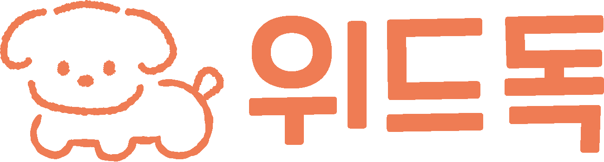
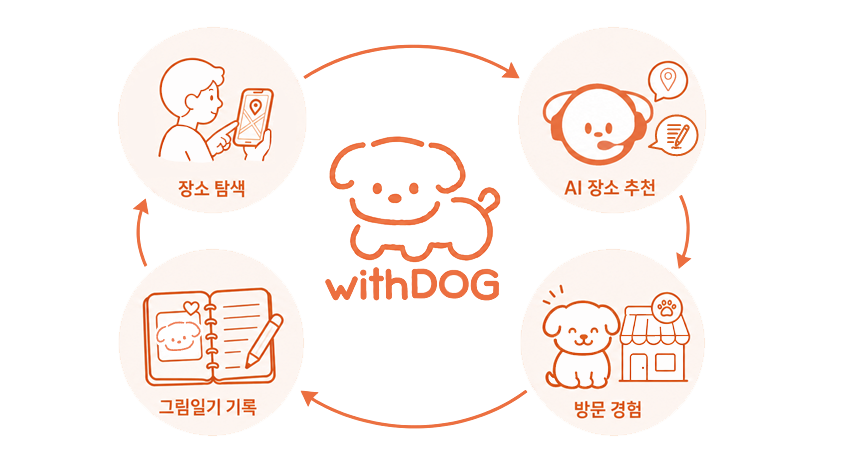

반려견 성향 기반 장소 추천 & AI 그림일기 챗봇 서비스
Web
Mobile

withDOG는 반려견·보호자 성향을 기반으로 동반 가능한 장소를 추천하고, 방문 경험을
강아지 시점의 AI 그림일기로 기록하는 챗봇 웹·앱 서비스입니다.
단순 추천이 아닌 성향 기반 개인화와 기록까지의 흐름을 AI 서비스로 차별화하기 위하여
장소탐색 → 장소추천 → 방문 경험 → 그림일기 기록을 하나의 흐름으로 연결합니다.
withDOG 프로젝트에서 APM을 맡아 서비스 기획 및 화면 설계부터
React 웹, Flutter 앱, AI 그림일기 생성·평가 파이프라인 개발을 담당했습니다.
Period
2026.03 – 05
Team
3인
Role
APM · FE · Flutter · AI
Key Work
- 멀티턴 대화와 단계적 비동기 생성을 단일 결과 화면으로 오케스트레이션
정보가 충분해질 때까지 되묻는 대화 → 텍스트 일기 생성 → 확인·수정 → 이미지 생성까지, 시점이 다른 각 단계를 단계별 로딩으로 끊김 없이 결과 카드에 연결하고 React Context·useState로 대화·생성 상태를 관리 React 18 · TypeScript · Vite · Tailwind · Framer Motion - 챗봇과의 대화를 통해 강아지 시점의 그림일기를 자동 생성하는 파이프라인 설계·구현
대화 내용과 반려견 프로필(이름·견종·성향)을 바탕으로 견종 특성과 유사 일기를 RAG로 검색해, 맥락에 맞는 일기 글과 그림을 6단계(DiaryChain)로 생성 ChromaDB · GPT-4.1-mini · gpt-image-1 - 생성 이미지 품질을 자동 채점·필터링하는 CV+LLM 하이브리드 평가 시스템 구축
사람 평가 정답 139장을 기준으로 CV 객관 지표(6개) + LLM 주관 판단(12개) 18개 항목을 결합하여 정확 일치율 37.4%(단독 평가기 대비 최고)를 LLM 단독 대비 30% 낮은 비용으로 달성 CLIP · YOLOv8 · GPT-4o Vision · OpenCV - React 웹 전 기능을 Android 네이티브 앱으로 포팅, 모바일에 맞춰 화면 설계
카카오맵 InAppWebView 임베드·길찾기 딥링크, 즐겨찾기 Optimistic UI, 그림일기 미니플로우 구현, 웹의 lucide 아이콘·손글씨 폰트(Gaegu)를 앱에 그대로 매핑해 디자인 정합성 확보 Flutter · Dart · InAppWebView
Impact
37.4%
정확 일치율
(단독 모델 중 최고)
(단독 모델 중 최고)
72.7%
±1 일치율
30.2%
동일 정확도 대비
토큰 절감
토큰 절감
우수상
캠프 최종
프로젝트
프로젝트
Tech Stack
React 18TypeScriptViteFramer MotionFlutterFastAPIGPT-4.1-minigpt-image-1GPT-4o VisionChromaDBKoELECTRAAWS